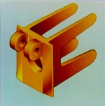
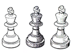
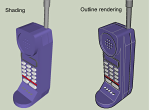
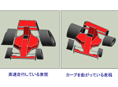
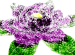
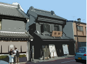
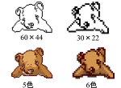
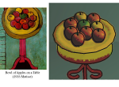
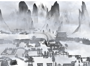

Non-Photorealistic Rendering
Introduction to My Research Papers
This page introduces major research papers and explains their contributions to computer graphics and related fields. In this research area, three doctoral degrees were completed through related studies.
Comprehensible Rendering
形状理解を助ける3次元形状表現

This research deals with interactive rendering, painterly expression, and real-time emphasized CG expression. I began working on this field before the term Non-Photorealistic Rendering, or NPR, became widely used.
The 1985 paper that received the IPSJ 25th Anniversary Best Paper Award was published in the IPSJ journal Information Processing. It was the first paper in the journal to use color printing. The work was recommended by the SIG on Graphics and CAD, and Professor Satoshi Kawai, then chair of the SIG, wrote an explanatory article discussing graphics and information processing, elements of graphics, the importance of interaction, and the significance of rendering for shape representation.
This research was also evaluated as a pioneering study in the computer graphics section of the IPSJ publication on its fifty-year history. Internationally, the English papers listed below have often been cited.
Main Papers
- Kunio KONDO, Fumihiko KIMURA, Taro TAJIMA, An Interactive Rendering Technique for 3-D Shapes, EUROGRAPHICS’85, pp.341-352, 1985.
- 近藤邦雄, 田嶋太郎,木村文彦, インタラクティブレンダリングシステムによる3次元形状の表現, 情報処理学会,情報処理,Vol.26,No.11, 1985, (情報処理学会創立25周年記念論文賞)
- Kondo, K., Kimura, F., and Tajima, T. An Interactive Rendering System with Shading. In Japan Annual Reviews in Electronics, Computers ~ Telecommunications 18, Computer Science and Technologies, Kitagawa, T. (Ed.), Ohmsha and North-Holland, Tokyo, pp. 255-271, 1988.
- 近藤邦雄, 穂坂 衛,木村文彦, 田嶋太郎, 曲面の形状感の表現, 精機学会,秋期大会 1981.11
- 近藤邦雄,木村文彦, 曲面の形状感の表現 第1報, 第1報中間調を用いた図の作成,精機学会,精密機械, 第49巻,第12号1983.12
This line of research began about ten years before a Non-Photorealistic Rendering session appeared at SIGGRAPH. The following SIGGRAPH 1990 paper cited the above work:
- Takafumi Saito, Tokiichiro Takahashi, Comprehensible rendering of 3-D shapes, SIGGRAPH '90 Proceedings of the 17th annual conference on Computer graphics and interactive techniques, pp.197-206, 1990.
This research was conducted under Professor Taro Tajima at Nagoya University. I also received valuable guidance from Professor Mamoru Hosaka and Professor Fumihiko Kimura at the University of Tokyo while preparing my doctoral dissertation.
Doctoral Dissertation
近藤邦雄、インタラクティブレンダリングによる3次元形状表現に関する研究 （東京大学にて1988年工学博士）
Interactive Rendering
インタラクティブレンダリングシステム
Paint and photo-retouching software are now common, but in the early 1980s, displays capable of showing 16 million colors cost around ten million yen and were valuable experimental systems for research. In these studies, we proposed an interactive paint system that could handle smooth shading.
We also proposed a method for shading regions enclosed by two Bezier curves, enabling smooth tonal expression. To develop shading rules, we analyzed hundreds of paintings and summarized common characteristics of tonal expression. The system was developed in collaboration with Sasatoku Printing Co., Ltd. and was used for brochures and academic conference posters.
- 近藤邦雄,田嶋太郎,木村文彦, Computer Aided Renderingの技術,情報処理学会, グラフィクスとCAD研究会シンポジウム,1984.12
- 近藤邦雄,田嶋太郎,木村文彦,曲面の形状感の表現 第2報ペイントシステムCARPの作成,精密工学会,精密機械,Vol.51,No.61, 1985.6
- Kunio KONDO, Fumihiko KIMURA, Taro TAJIMA, An Interactive Rendering Technique for 3-D Shapes, EUROGRAPHICS’85, pp.341-352, 1985.
- 近藤邦雄, 田嶋太郎, 木村文彦,レンダリングのための濃淡表現アルゴリズム,日本図学会, 図学研究,Vol.39, 1986.9
- 近藤邦雄,木村文彦, 田嶋太郎,絵画における濃淡表現の分類と計算機による濃淡表現法,日本図学会,図学研究,Vol.40,1987.3
These painterly rendering studies were also related to later research on brush strokes, sumi-e, and painterly image generation.
- Tomoyuki Nishita, Shinichi Takita, and Eihachiro Nakamae, Display Algorithm of Brush Strokes using Bezier Functions, CGI'93; Proc. of Computer Graphics International 1993, pp.244-257, 1993-6.
- Qinglian Guo, Tosiyasu L. Kunii, Modeling the Diffuse Paintings of ‘Sumie', Modeling in Computer Graphics, IFIP Series on Computer Graphics 1991, pp.329-338, 1991.
- 加藤陽一, 近藤邦雄, コンピュータ・グラフィックスのアパレル産業への応用, 情報処理学会,情報処理, Vol.29 No.10, 1988.10
Pen & Ink Rendering
Pen & Ink レンダリング

This research began in the early 1980s under the theme of expressing the impression of curved surfaces. While much CG research at that time focused on photorealistic image generation, this work aimed to develop line-based representation techniques that could effectively communicate the impression and structure of shapes.
The research includes methods for representing shape, hand-drawn illustration styles, line-width variation, and dot-and-line shading. After 2010, graduate students further developed methods for real-time exaggeration of contour-line thickness.
(1) 線画レンダリング
- 旭昌宏, 近藤邦雄, 島田静雄, 佐藤尚, イラスト図作画支援システムの開発, 第7回 NICOGRAPH 論文コンテスト, pp.22-31, 1991.
- 近藤邦雄, 穂坂 衛, 田嶋太郎,形状の感じを表わす線画レンダリング, 昭和54,55年度科学研究費報告書「幾何モデルとその応用に関する研究」,1980
- 近藤邦雄, 穂坂 衛,木村文彦, 田嶋太郎, 曲面の形状感の表現, 精機学会,秋期大会 1981.11
(2) ドット・ラインシェーディング
- S. SHIMADA, K. KONDO, A. KANBARA, H. SATO, S. SHIMADA, Interactive Rendering Tool for Technical Illustration, Proc. of ICECGDG'94, pp.762-766, 1994.
- A. KANBARA, K. KONDO, H. SATO, S. SHIMADA, Interactive Rendering System for Line Drawing by Dot and Line Shading in M. Gigante and T L Kunii (eds.), INSIGHT THROUGH COMPUTER GRAPHICS, World Scientific, pp.172-179, 1996.
- 近藤 邦雄,神原 章, 佐藤 尚, 島田 静雄, 尚 鴬武, レンダリングのための対話型線画表現法, 日本図学会,図学研究第55号, pp.11-15, 1992
- 尚鳳武,近藤邦雄,佐藤尚,島田静雄, 3次元形状のための対話型線画表現システム,日本図学会, 1991年度大会研究発表会,1991
- 神原 章, 近藤 邦雄,佐藤 尚,島田 静雄, PostScript を用いたテクニカルイラストレーション作画システムの構築,情報処理学会, 全国大会講演論文集 第44回平成4年前期(2), pp.343-344, 1992.2.24
- 神原 章,近藤 邦雄,佐藤 尚,島田 静雄, 高品位白黒画像によるレンダリング手法, 情報処理学会, グラフィクスとCAD研究会, 63(1992-CG-058),pp.97-103, 1992.8
- 神原章,近藤邦雄,佐藤尚,島田静雄, 3次元形状表現のための白黒画像の描画法, 情報処理学会, 情報処理学会論文誌 Vol. l34,No. 8, pp.1762—1769,1993
- 神原章,近藤邦雄,佐藤尚,島田静雄, 高品位白黒画像の濃淡制御法, 情報処理学会, 第46回全国大会講演論文集 2-363,1993
- 島田繁広,近藤邦雄,佐藤尚,島田静雄,神原章, ドット・ラインシェーディングによる白黒画像のための強調描画手法,情報処理学会, グラフィクスと CAD シンポジウム論文集, pp.41-47, 1994
- 関谷 英明, 島田 繁広,近藤 邦雄, 佐藤 尚,島田 静雄,モノクロレンダリングのためのテクスチャ描画アルゴリズム,情報処理学会,第50回全国大会講演論文集(2), pp.347-348,1995
- 島田繁広,関谷英明,近藤邦雄,佐藤尚,島田静雄,3次元形状のための白黒画像の強調描画手法,Visual Computing'95, pp.108-109,1995
- 関谷 英明, 島田 繁広,近藤 邦雄, 佐藤 尚,モノクロレンダリングのためのテクスチャ描画手法, 情報処理学会,グラフィックスとCAD研究会報告,Vol.95, No.78,pp.81-87,1995
(3) アニメ調輪郭線のリアルタイムレンダリング
- 松尾隆志, 三上浩司, 渡辺大地, 近藤邦雄,リアルタイム3DCG における物体の形状を考慮した輪郭線の誇張表現手法の提案,芸術科学会,第2.回NICOGRAPH論文コンテスト論文集,DVD(II-2) ,2010.9
- 松尾隆志,三上浩司,渡辺大地,近藤邦雄,リアルタイム3DCGにおける物体の形状を考慮した輪郭線の誇張表現手法の提案,芸術科学会, 芸術科学会論文誌,第10巻 ,第4号, pp.251-262,2011.12
- 松尾隆志,渡辺大地,近藤邦雄,三上浩司, アニメ調輪郭線のリアルタイムレンダリング －連続した太さ変化のある輪郭線表現－,コンピュータエンタテインメントソフトウェア協会（CESA）,CEDEC2011,2011.9
- 松尾隆志,三上浩司,渡辺大地,近藤邦雄,形状の特徴や動的な変形を考慮したリアルタイム3DCGにおける輪郭線の誇張表現手法,映像情報メディア学会,映像情報メディア学会誌,Vol.67, No.2,2013.3
Enhanced Outline Rendering
3次元モデルの輪郭線描画手法

Drawing contour lines is an effective method for helping viewers understand three-dimensional shapes. This research proposed methods that allow contour-line colors and thicknesses to be changed for polygonal models and subdivision surfaces. The work also developed into toon-rendering applications and real-time outline rendering.
(1) 形状特徴表現のためのエッジ強調描画
- 望月義典, 近藤邦雄,形状特徴表現のためのエッジ強調描画手法, 情報処理学会,情報処理学会論文誌, Vol.40, No.3, pp.1148-1155,1998
- Yoshinori Mochizuki, Kunio Kondo, Hisashi Sato, Enhanced Edge Rendering for Comprehensible Image, Proceedings of the 8th ICECGDG, Vol.1, pp.194-199,1998
- 望月 義典,近藤邦雄, 細分割曲面の輪郭線描画手法, 情報処理学会,情報処理学会論文誌, Vol.41, No.3,pp.601-607 2000.3
- 望月義典,近藤邦雄,佐藤尚,島田静雄,輪郭線描画による形状表現法,画像電子学会,Visual Computing’96予稿集,1996
- 望月義典,近藤邦雄,佐藤尚,島田静雄,形状理解を容易にする特徴強調画像の生成,情報処理学会,第52回全国大会論文集,2-397,1996
- 望月義典,近藤邦雄,佐藤尚,島田静雄,特徴強調描画法による形状表現法,日本図学会, 1997年度大会（東京）学術講演論文集,pp.83-86,1997
- 望月 義典, 近藤 邦雄, 細分割曲面の輪郭線抽出描画手法, 日本図学会,1999年度大会研究発表会1999.5.8
Mochizuki's research was later applied by Professor Mitsuru Kaneko to outline rendering in toon-rendered animation and became one of the widely used expressions in Japanese animation.
Related Doctoral Dissertation and Papers
金子満：次世代アニメーション制作システムに関する研究 ，東京工業大学、1996
- 金子満、中嶋正之、セルアニメタッチ画像生成のための3次元画像の2次元アルゴリズム、テレビジョン学会誌、Vol.49, No.10,pp.1288-1295,1995
- 金子満、中嶋正之、ノンフォトリアリスティックアニメーションの生成、情報処理学会グラフィクスとCAD研究会、76-4,pp.23-30,1995
(2) リアルタイム3DCGにおける輪郭線の誇張表現
- 松尾隆志,三上浩司,渡辺大地,近藤邦雄,形状の特徴や動的な変形を考慮したリアルタイム3DCGにおける輪郭線の誇張表現手法,映像情報メディア学会,映像情報メディア学会誌,Vol.67, No.2,2013.3
- 松尾隆志,三上浩司,渡辺大地,近藤邦雄,リアルタイム3DCGにおける物体の形状を考慮した輪郭線の誇張表現手法の提案,芸術科学会, 芸術科学会論文誌,第10巻 ,第4号, pp.251-262,2011.12
- 松尾隆志, 三上浩司, 渡辺大地, 近藤邦雄,リアルタイム3DCG における物体の形状を考慮した輪郭線の誇張表現手法の提案,芸術科学会,第26回NICOGRAPH論文コンテスト論文集,DVD(II-2) ,2010.9
- 松尾隆志,渡辺大地,近藤邦雄,三上浩司, アニメ調輪郭線のリアルタイムレンダリング －連続した太さ変化のある輪郭線表現－,コンピュータエンタテインメントソフトウェア協会（CESA）,CEDEC2011,2011.9
望月義典、エッジ描画による特徴強調表現とその応用 , 2000
Anime Perspective
アニメ パース：形状誇張のための投影変換

Manga and animation often use expressions based on perspective projection, but their actual drawings may differ from strict perspective projection calculations. This research analyzed projection methods in manga and animation and proposed projection transformation methods for exaggerating the shapes of objects.
- 宮澤貴之,望月義典,近藤邦雄,佐藤尚,島田静雄, ３次元形状を誇張するための投影変換手法, テレビジョン学会, テレビジョン学会誌, Vol.50, No.10, pp.1543-1548,1996
- 望月義典, 近藤邦雄, 宮澤貴之, 誇張表現制御のための投影変換,第14回NICOGRAPH/ MULTIMEDIA論文コンテスト論文集, pp.66-72,1998 , (第14回NICOGRAPH/MULTIMEDIA論文コンテスト奨励賞受賞)
- 宮澤貴之,近藤邦雄,佐藤尚,島田静雄,形状を誇張するための投影変換図法,情報処理学会,第52回全国大会論文集,2-399,1996
- 宮澤貴之,望月義典,近藤邦雄,佐藤尚,島田静雄,3次元形状を誇張するための投影変換手法, 1996年テレビジョン学会映像メディア部門冬季大会 講演予稿集, p.67, 1996.12
- 宮澤貴之,佐藤宗幸,望月義典, 近藤邦雄,佐藤尚,島田静雄,３次元形状を誇張するための投影変換手法,日本図学会, 1997年度大会（東京）学術講演論文集,pp.77-82,1997
NPR Using Photon Brush Method
フォトンブラシを用いたブラシ表現

This research proposes a painterly image generation method by replacing the brightness calculation and photon placement used in photon mapping with brush placement. While photorealistic image generation generally uses many photons to obtain accurate and clean images, this method intentionally uses fewer photons and places brushes sparsely to create a painterly appearance.
- KONDO Kunio, IWABUCHI Eitaro, Non Photorealistic Rendering using Photon Brushes, Asia Digital Art and Design Association, International Journal of Asia Digital Art and Design Association, Vol.4, 2006.3
- Kunio Kondo, Eitaro Iwabuchi, Non Photorealistic Rendering using Photon Brush, Asia Digital Art and Design Association, Proceedings of the 2nd annual conference of Asia Digital Art and Design Association, 2004.1
- 岩渕栄太郎,近藤邦雄,フォトンブラシを利用した絵画調画像生成,画像電子学会,情報処理学会,Visual Computing/グラフィクスと CAD 合同シンポジウム 2004, pp.131-135, 2004.6
- 岩渕栄太郎,近藤邦雄,フォトンブラシを利用した絵画調画像生成 (4N-1), 情報処理学会,第66回全国大会講演論文集, 2004.3
Illustration from a Photograph
写真のイラストレーション変換

This research proposed a method for generating illustration-like images from photographs. It includes functions such as converting regions of a certain size to the same color and drawing contour lines around regions. Such techniques can be applied to photo-processing filters for digital cameras and image editing software.
- Yusuke HAMASAKI, Kunio KONDO, Image Generation Method using Synthesis and Control of Rendering Region, Asia Digital Art and Design Association, International Journal of ADADA, Vol.1, pp.31-36, 2004.4
- Yusuke HAMASAKI, Kunio KONDO, Image Generation Method using Synthesis and Control of Rendering Region, Asia Digital Art and Design Association, Proceedings of the 1st annual conference of Asia Digital Art and Design Association, pp.70-71,2003.9
- 濱崎雄介,近藤邦雄,実写画像をもとにしたイラストレーションの生成手法,画像電子学会・情報処理学会,Visual Computing/グラフィクスと CAD 合同シンポジウム 2003, pp.189 -194,2003.6
- 濱崎雄介,近藤邦雄,領域分割と合成処理によるイラスト画像の生成手法,芸術科学会, NICOGRAPH2003,2003.5
Image Synthesis Using Area Segmentation
イラストレーション変換における配色強調
This research deals with color transformation of images using kansei scales and harmonious color schemes.
- Yukiko UNAMI, Kunio KONDO, Area Segmentation and Color Exaggeration for Image Synthesis, Asia Digital Art and Design Association, International Journal of Asia Digital Art and Design Association, Voi.5, pp.38-43, 2006.12
- Yukiko UNAMI, Kunio KONDO, Image Generation Method using Area Division and Color Exaggeration, Asia Digital Art and Design Association, Proceedings of the 3rd annual conference of Asia Digital Art and Design Association, pp.108-109,2005.12
- Yukiko UNAMI, Kunio KONDO, Image Synthesis Method using Area Segmentation and Color Harmonization, Asia Digital Art and Design Association, Asia Digital Art and Design Association International Forum 2006, 2006.12
- 宇波由紀子,近藤邦雄,領域分割と色の誇張を用いたイラスト画像の生成,情報処理学会,第67回全国大会講演論文集,Vol.67, No.4,pp185-186,2005.3
Pixel Art Generation from Photograph
写真からドット絵の生成手法

- 鈴木和明,斉藤豪, 中嶋正之，近藤邦雄,単一オブジェクト写真からドット絵風のキャラクタ画像を生成する手法の提案, 電子情報通信学会,電子情報通信学会論文誌, 2008.12
- Kazuaki Suzuki, Kunio Kondo, Binary Contour Image Down Scaling For Pixel Art, Proceeding of IWAIT 2006, S10-3, 2006.1
- 鈴木 和明,近藤 邦雄,ドット絵の調査とドット絵のための輪郭線描画・縮小・着色手法画像電子学会,情報処理学会,Visual Computing /グラフィクスと CAD 合同シンポジウム 2006,鈴木 和明,近藤 邦雄,2006.6, (VC賞：ポスター）
- 鈴木和明,近藤邦雄,ドット絵描画手法の分析と輪郭線描画手法 (2Y-4),情報処理学会,第67回全国大会講演論文集,Vol.67, No.4, pp.183-184,2005.3
- 鈴木 和明, 近藤 邦雄,ドット絵のための輪郭線描画手法,画像電子学会,第219回研究会, pp.35-42,2005.1
Artistic Rendering
画像内容を考慮した抽象化に基づく絵画風レンダリング手法

(1) 絵画分析と視覚パラメータによる絵画風画像生成
- 米山孝史,源田悦夫,近藤邦雄,視覚パラメータに基づく絵画風画像生成手法, 日本図学会,図学研究, Vol.43, No.4, pp.13-21,2009.12
- Takashi Yoneyama, Kunio Kondo, Masaki Fujihata, Vision based Feature Analysis of Paintings and Parametric Transformation, Asia Digital Art and Design Association, Proceedings of the 3rd annual conference of Asia Digital Art and Design Association,pp.106-107,2005.12
- Takashi Yoneyama, Kunio Kondo, Masaki Fujihata, Analysis of Paintings and Image Synthesis using 3D models, Asia Digital Art and Design Association, Proceedings of the 4th annual conference of Asia Digital Art and Design Association, pp.132-133,2006.12
- Takashi Yoneyama, Etsuo Genda, Kunio Kondo, Proposal of Image Generation Methods based on the Process of Visual Information Processing, Asia Digital Art and Design Association, Proceedings of the 5th annual conference of Asia Digital Art and Design Association, 2007.12
- Takashi Yoneyama, Etsuo Genda, Kunio Kondo, Painterly Renderings Using a Synthesis of Painting Styles Based on Visual Perception, proc. of VRCAI,DVD,2009.12
- 米山孝史,近藤邦雄,藤幡正樹,視覚に基づく絵画の特徴分析とパラメータ変換の提案,画像電子学会,画像電子学会2006 年度第34 回年次大会予稿集, pp.7-8,2006.6
- 近藤邦雄,米山孝史, 視覚に基づく絵画の特徴分析とパラメータ変換の提案, CREST21 Art シンポジウム「描く」を科学する, pp.19-26, 2006.1
- 米山 孝史, 近藤 邦雄, 藤幡 正樹, 視覚モジュールに基づく絵画の特徴分析と画像生成手法,画像電子学会,情報処理学会, Visual Computing/グラフィクスと CAD 合同シンポジウム 2007, 2007.6
(2) 抽象化に基づく3次元形状モデルの絵画風レンダリング
- Takashi Yoneyama, Etsuo Genda, Kunio Kondo, Artistic Rendering of Buildings with Levels of Detail, Asia Digital Art and Design Association, Proceedings of the annual conference of Asia Digital Art and Design Association, 2008.11
- Takashi Yoneyama, Etsuo Genda, Kunio Kondo,Artistic Rendering of 3D Models with Levels of Abstraction, International Journal of ADADA, Asia Digital Art and Design Association,Vol.9-10,pp.13-20,2009.12
- 米山孝史, 源田悦夫, 近藤邦雄, ,建築物を含む風景画・背景画の視覚に基づく特徴分析と画像生成手法, 日本図学会,2008年度日本図学会大会講演論文集, 2008.5
This research developed from the outcomes of the CREST project under Professor Masaki Fujihata and was further advanced in the doctoral program at Kyushu University under Professor Etsuo Genda.
米山孝史，画像内容を考慮した抽象化に基づく3次元形状モデルのレンダリング手法に関する研究 , 2010, 九州大学にて取得
Multi-Projection Method for India-Ink Painting
水墨画表現のための投影手法

India-ink paintings contain various expressive intentions, and a single projection camera cannot fully represent three-dimensional space in such works. This research analyzed paintings using scattered perspective and identified features such as multiple viewpoints, parallel projection, reverse projection, and equal division. Based on this analysis, it proposed projection methods using multiple cameras for India-ink-style expression.
- 李 磊, 三上 浩司, 柿本 正憲, 近藤 邦雄, CGによる絵画表現のための散点透視描画手法,芸術科学会, NICOGRAPH 2012,2012.11
- 李 磊,三上浩司,柿本正憲,近藤邦雄, CGによる絵画表現のための散点透視の分析とその描画手法,日本図学会, 2012年度秋季大会講演論文集,2012.12